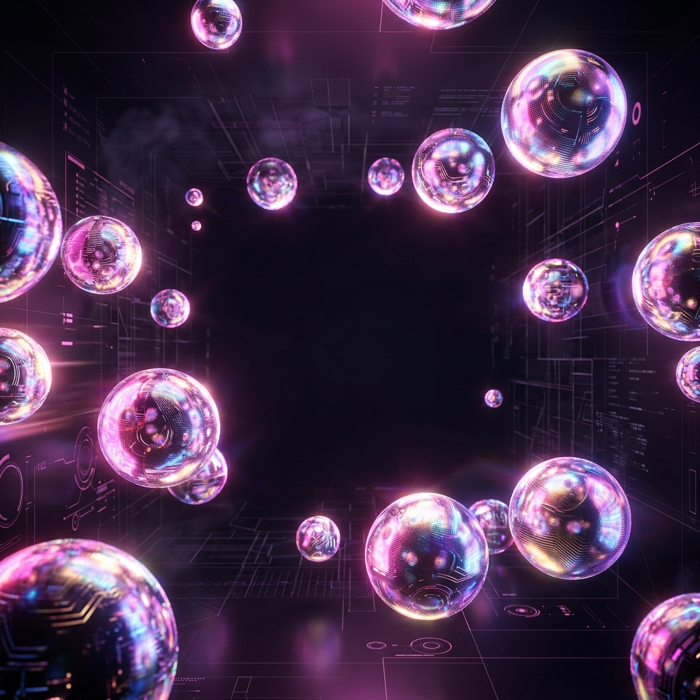

Tech Art & 3D
Custom Shaders, VFX pipelines, rendering optimizations and 3D integrations.
Minotaur Character Pipeline
A full 3D character creation process, covering high-poly sculpting, retopology, UV mapping, texturing, rigging, and final animation.
View DetailsSci-Fi Metal Environment
A full 3D environment featuring custom shaders, particle systems, and PBR textures running in Unity's Built-In pipeline.
View DetailsScenery Shader
A highly adaptable scenery material faking depth via Parallax Occlusion masking and blending noise height-maps for different surfaces like soil and rock.
View DetailsMarks of Corruption - 2D Art
A comprehensive illustrative 2D art showcase, covering character design, environmental props, and key art for a top-down puzzle game.
View DetailsVFX Graph - Dynamic Particles
Mesh-based lightning effects and a 4-layer dynamic fire system featuring custom LOD optimization and point-light synchronization via C#.
View Details